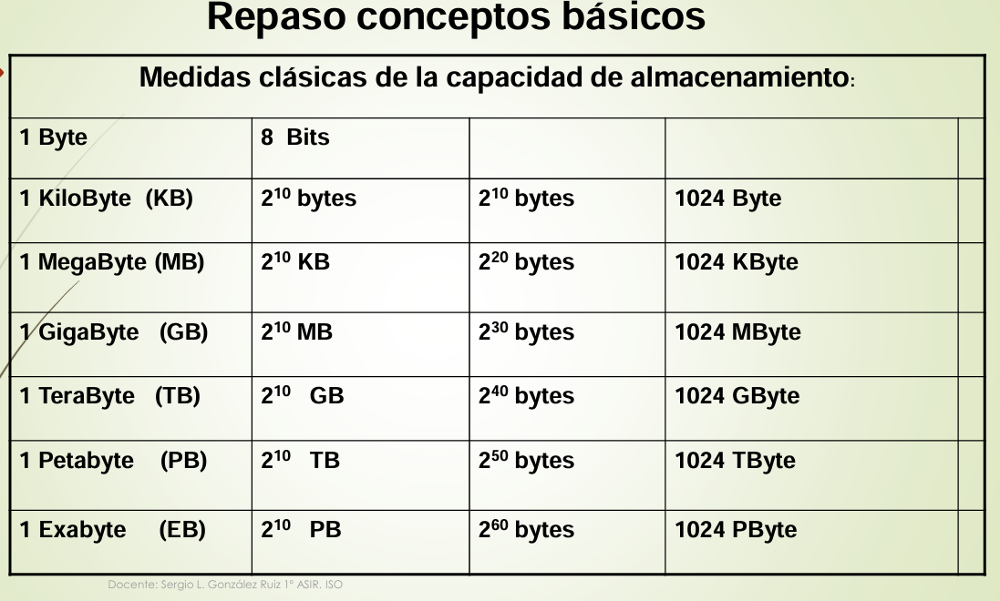
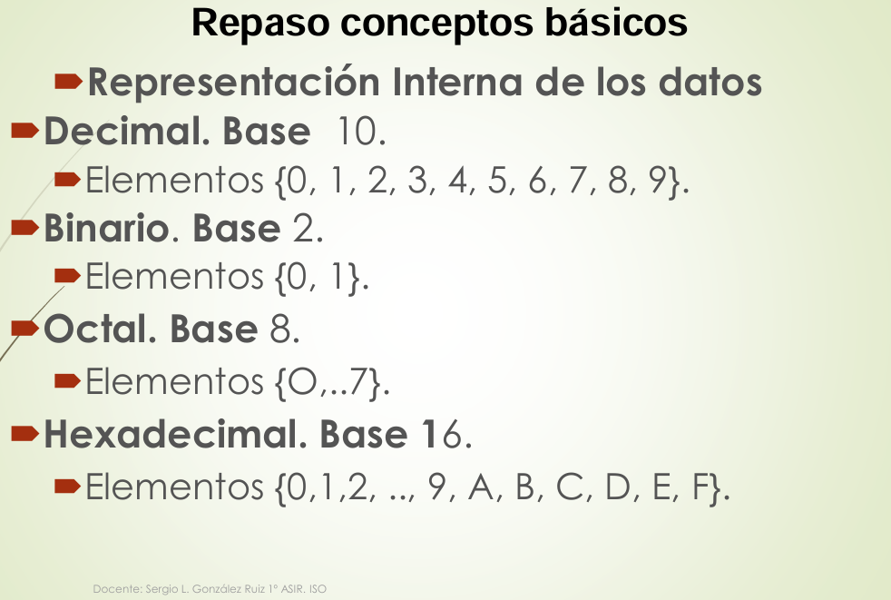
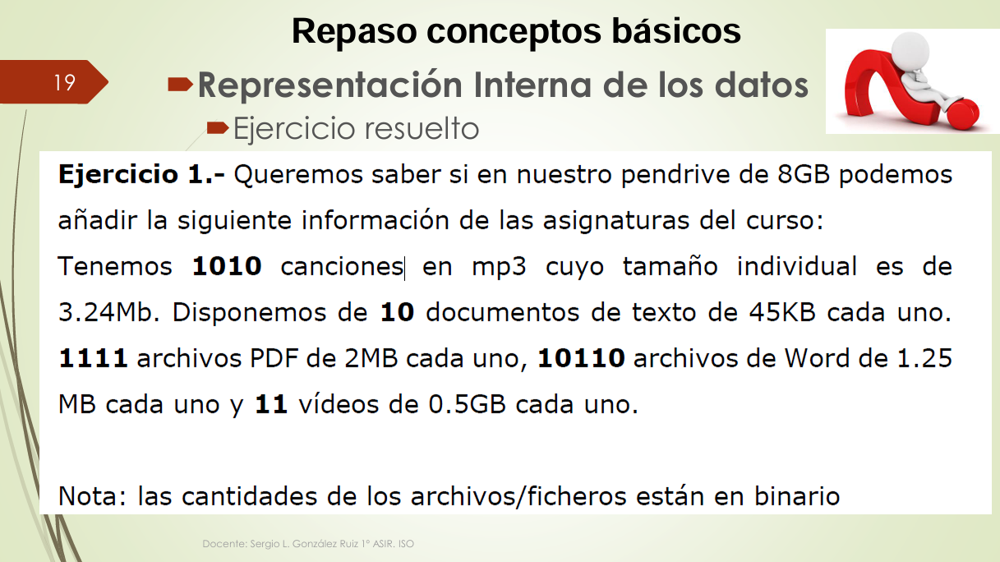
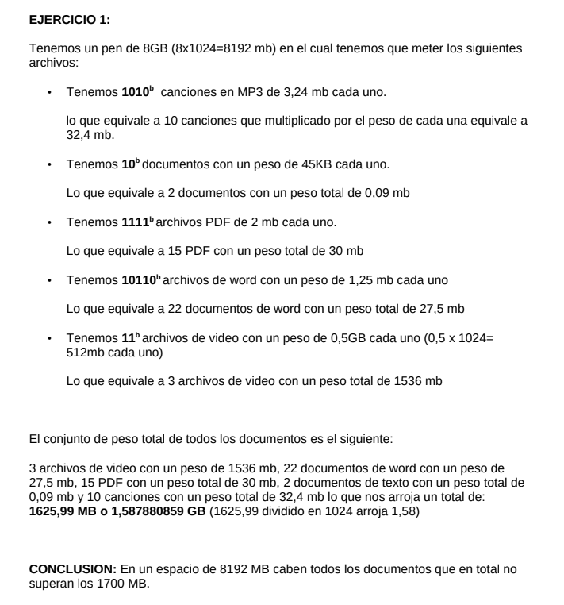

Fundamentos de Hardware
Cambios de magnitudes y representación interna de los datos
Primera actividad realizada en la asignatura de Fundamentos de Hardware.
Información
Asignatura: Fundamentos de Hardware
Tipo: Conceptos básicos
Estado: terminado
Objetivo
Comprender las diferentes unidades utilizadas para representar cantidades de información y conocer cómo se representan internamente los datos.
Contenido
Cambios entre magnitudes
Byte, Kbyte, Mbyte, Gbyte, Tbyte, Pbyte y Exabyte.
Representación interna de los datos
Sistema Binario, Decimal, Hexadecimal y Octal.
Lo que he aprendido
He aprendido a realizar conversiones entre diferentes magnitudes de información y a representar datos en diferentes sistemas numéricos, como binario, decimal, hexadecimal y octal. Además, he comprendido la importancia de estas representaciones en el ámbito de la informática y cómo se utilizan para almacenar y procesar datos.
Evidencias




Documentación ampliada
A continuación puedes consultar el PDF con información ampliada sobre la actividad.